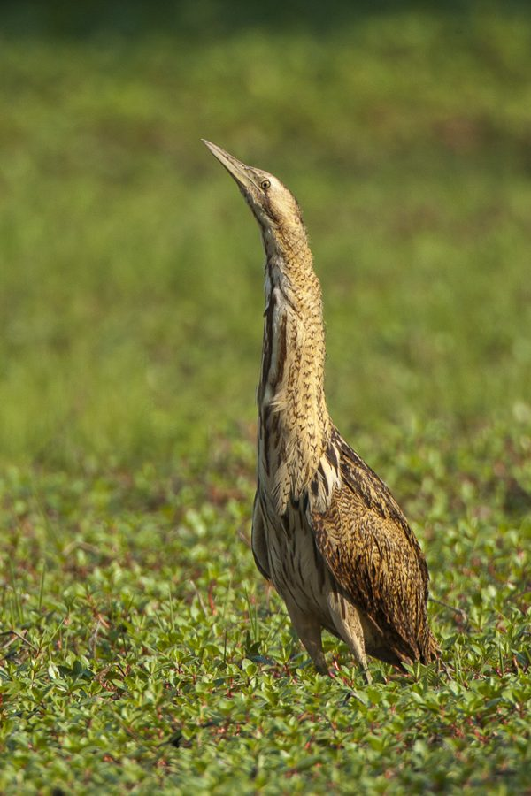

निरगौंगEurasian Bittern
Botaurus stellaris · Ardeidae · BRD-0374

- Scientific name वैज्ञानिक नाम
- Botaurus stellaris (Linnaeus, 1758)
- Family कुल
- Ardeidae
- Hindi हिंदी
- निरगौंग
- Local names स्थानीय नाम
- nir-goung, baz, eurasian bittern
- Status here यहाँ की स्थिति
- native
- Movement आवागमन
- Winter visitor
- Known from कहाँ दर्ज
- Others have published records from the wider Awadh–Purvanchal plain, none yet from Basti–Ayodhya अवध–पूर्वांचल से दूसरों के प्रकाशित अभिलेख, बस्ती–अयोध्या से अभी नहीं
- IUCN IUCN
- LC
- Review समीक्षा
- not yet reviewed
When to look कब देखें
Winter visitor शीतकालीन प्रवासी. Expected mainly in January, February, March. मुख्यतः जनवरी, फ़रवरी, मार्च में अपेक्षित।
Throughout the temperate areas of Europe and Asia from Great Britain to Japan; in winter occurs in small numbers throughout northern India (Baker 1929). GBIF records in Uttar Pradesh fall from January to March. All migrants and visitors →
Tell it apart from इनसे अलग पहचानें
निरगौंग / Eurasian Bittern
Botaurus stellaris (Linnaeus, 1758) — Ardeidae
निरगौंग — घने नरकुलों और सरपत के दलदलों में छिपकर रहने वाला बगुला कुल का बड़ा पक्षी, जो सर्दियों में उत्तर भारत में आता है। इसका शरीर बादामी-पीला और काले-भूरे धब्बों व धारियों से भरा होता है, जिससे यह सूखे सरपत में बिल्कुल घुलमिल जाता है। छेड़े जाने पर यह पास से उठकर बिना आवाज़ कुछ सौ गज़ उड़ता है और फिर बैठ जाता है (बेकर 1929)। यह रात के समय शिकार के लिए निकलता है।
Quick Identification त्वरित पहचान
| Feature | Description |
|---|---|
| Habit | Heavy-bodied, cryptically patterned heron skulking in dense reeds and rising noiselessly when disturbed |
| Plumage | Back and interscapulars black with broad ochre-buff edges; lower back, rump and tail pale ochreous with black bars (Baker 1929, pp. 370–371) |
| Crown & Moustache | Crown and nape black; blackish line from gape below cheeks; buff central line on throat streaked black (Baker 1929, pp. 370–371) |
| Neck Plumes | Fore-neck to vent pale yellowish-buff with broken streaks of brown; bars on sides of breast (Baker 1929, p. 371) |
| Bill & Eye | Bill greenish-yellow, culmen darker; iris yellow or whitey-yellow; lores green to livid blue (Baker 1929, p. 371) |
| Legs & Feet | Legs and feet dull pale greenish, more yellow at joints and on sole (Baker 1929, p. 371) |
Field tip: Look for a large golden-buff marsh bird with black crown and barred quills rising noiselessly from dense reeds (Baker 1929, pp. 370–371).
हिंदी — कैसे पहचानें:
पीला-भूरा शरीर जिस पर काली पट्टियां और धारियां हों, सिर पर काली टोपी, हरी-पीली चोंच और नरकुलों में छिपकर रहने की आदत (बेकर 1929)।
Morphology आकारिकी
Measurements as given by Baker (1929) for the Bittern (Botaurus stellaris stellaris):
| Measurement | Range |
|---|---|
| Biometrics | ♂ : wing 320 to 350 mm. ; tail 95 to 116 mm. ; tarsus 90 to 100 mm. ; culmen 60 to 75 mm.; ♀ : wing 300 to 350 mm. ; culmen 65 to 75 mm. (Baker 1929) |
Stuart Baker (1929, pp. 370–371) described the adult plumage: "A short line from the bill to the eye buff ; rest of crown and nape black, the longest feathers of the crest edged with buff at the tips and some of the side feathers edged the same : back and interscapulars black with broad ochre-buff edges, encroaching on to the black as bars at the base ; lower back, rump and tail pale ochreous with numerous bars and mottlings of black... sides of head ochre faintly irrorated with black ; a blackish line from the gape below the cheeks ; chin and throat white, with a well-marked buff central line streaked with black and continued down to the breast ; fore-neck to vent pale yellowish-buff, with broken streaks of brown and darker buff: on the sides of the breast the streaks are replaced by bars."
Colours of soft parts: "Iris yellow or whitey-yellow ; bill greenish-yellow, culmen darker, almost black at the tip ; legs and feet dull pale greenish, more yellow at joints and on sole; “lores and round eye green to livid blue ” ( Witherby )" (Baker 1929, p. 371).
Vocalisations: On wintering grounds it is remarkably quiet, uttering only a harsh, low croak when flushed; its famous resonant booming call is given almost entirely on northern breeding territories (Rasmussen & Anderton 2012).
हिंदी:
बेकर (1929) के अनुसार नर के डैने 320 से 350 मिमी, पूंछ 95 से 116 मिमी, टार्सस 90 से 100 मिमी और चोंच 60 से 75 मिमी होती है; मादा के डैने 300 से 350 मिमी और चोंच 65 से 75 मिमी होती है। आंखें पीली या मटमैली-पीली, चोंच हरी-पीली और पैर हल्के हरे होते हैं।
Behaviour & Ecology व्यवहार और पारिस्थितिकी
Baker (1929, p. 371) recorded: "The Bittern is a nocturnal bird, frequenting dense beds of rushes and reeds in swamps, showing itself very little by day unless disturbed by intruders, when it rises close by one and flaps noiselessly away for a couple of hundred yards before again pitching."
While adult birds rely primarily on low, silent flight when flushed from reedbeds, Baker noted that young birds when disturbed often stand erect with head and neck held parallel to the reeds, making them difficult to distinguish from the surrounding marsh vegetation (Ali & Ripley 1987).
हिंदी:
बेकर (1929) के अनुसार यह रात का पक्षी है जो दिन में नरकुलों में छिपा रहता है। आहट होने पर यह पास से उड़कर सौ-दो सौ गज दूर जाकर फिर छिप जाता है।
Life Cycle / Phenology जीवन चक्र
Baker (1929, p. 371) recorded the breeding habits: "The Bittern does not breed within Indian limits. In temperate Europe it breeds during May, rarely at the end of April or early in June. The nest is a rough untidy platform placed on broken-down reeds and rushes and composed of bits of these materials... The eggs number four to six and are a light uniform olive-brown".
In Uttar Pradesh, published GBIF occurrence records fall in January, February, and March, indicating a scarce and localized winter visitor to lowland marshes.
हिंदी:
बेकर (1929) के अनुसार यह भारत में प्रजनन नहीं करता; यूरोप में यह मई में नरकुलों पर चार से छह अंडे देता है। उत्तर प्रदेश में इसके रिकॉर्ड जनवरी से मार्च के बीच मिलते हैं।
Host Plants or Prey आहार
Baker (1929, p. 371) noted that bitterns "feed on fish, frogs and all kinds of small reptiles, do not disdain the young of other birds which nest in swamps".
हिंदी:
बेकर (1929) के अनुसार इसका भोजन मछलियां, मेंढक, छोटे सरीसृप और दलदल में घोंसला बनाने वाले अन्य पक्षियों के बच्चे हैं।
Predators / Natural Enemies शत्रु
No source opened for this atlas names a specific natural predator of adult Eurasian Bitterns in Uttar Pradesh wetlands.
हिंदी:
इस एटलस के लिए खोले गए किसी भी स्रोत में इसके किसी विशिष्ट शिकारी का उल्लेख नहीं है।
Agricultural / Human Relevance कृषि प्रासंगिकता
Inhabits deep marshland and reed swamps with no negative impact on agriculture. Protected under the Wildlife (Protection) Act, 1972.
हिंदी:
यह दलदली इलाकों और नरकुलों में रहता है और फसलों को कोई नुकसान नहीं पहुंचाता। यह वन्यजीव (संरक्षण) अधिनियम, 1972 के तहत संरक्षित है।
Expected Locally स्थानीय रूप से अपेक्षित
Not a field record. Written from published accounts for eastern Uttar Pradesh. No confirmed local sighting yet — if you have seen it, that is what the atlas needs.
अभी तक स्थानीय पुष्टि नहीं। यह विवरण प्रकाशित स्रोतों से है, किसी अवलोकन से नहीं।
Expansive reedbeds, dense Typha swamps, and undisturbed margins of oxbow lakes across the Ghaghra and Rapti floodplains offer suitable wintering habitat.
GBIF holds published records from the wider Awadh–Purvanchal plain, none yet from Basti–Ayodhya. Regional published records come from Unnao (two records), Hardoi (one record), Sultanpur (one record), and Azamgarh (one record), contributed by 7 observers between 2012 and 2018 during January, February, and March. The nearest records to Basti lie in Sultanpur and Azamgarh.
A first record would be a photograph with place and date, sent through the About page.
Distribution वितरण
Global range: Baker (1929, p. 371) recorded: "Throughout the temperate areas of Europe and Asia from Great Britain to Japan. In India it occurs in small numbers in Winter throughout the North and straggles South to the Deccan, Bombay, Kamptee, Cuttack (Annandale) and, it is said, Bangalore. In Burma it wanders occasionally as far South as Pegu."
In India: Baker (1929, p. 371) recorded: "In India it occurs in small numbers in Winter throughout the North and straggles South to the Deccan".
In Uttar Pradesh: Winter occurrences are recorded across Unnao, Hardoi, Sultanpur, and Azamgarh in extensive wetland systems.
In Basti district / eastern UP: GBIF holds no record from Basti or Ayodhya; the nearest records are from Sultanpur and Azamgarh.
हिंदी:
बेकर (1929) के अनुसार इसका विस्तार ब्रिटेन से जापान तक यूरोप और एशिया के शीतोष्ण भागों में है। भारत में यह सर्दियों में उत्तरी भागों में अल्प संख्या में आता है और दक्षिण में दक्कन तक भटक जाता है। उत्तर प्रदेश में इसके रिकॉर्ड उन्नाव, हरदोई, सुल्तानपुर और आजमगढ़ से हैं।
Research Questions शोध प्रश्न
- Which remaining Typha and Phragmites reedbeds in eastern Uttar Pradesh provide sufficient contiguous cover for wintering bitterns? / पूर्वी उत्तर प्रदेश के कौन से नरकुल वाले दलदल सर्दियों में निरगौंग के छिपने के लिए पर्याप्त हैं?
- Does human winter reed-cutting along lake margins displace roosting bitterns from traditional wetland sanctuaries? / क्या झीलों के किनारे नरकुल काटने से इस पक्षी के रहने की जगह नष्ट हो जाती है?
- How do wintering bitterns share dense swamp cover with resident Purple Herons?
- What nocturnal foraging techniques are used by bitterns along shallow marsh canals?
- Can local wetland watchers identify the Eurasian Bittern from the common Indian Pond Heron when flushed from reeds? (An observer can compare the much larger size, golden-buff plumage, and barred flight feathers.)
Similar Species मिलती-जुलती प्रजातियाँ
| Species | How to tell apart | हिंदी | |
|---|---|---|---|
| [[purple_heron | Purple Heron]] (Ardea purpurea) | Much longer and slender neck with black longitudinal stripes, narrower dagger bill, chestnut-purple underparts (Baker 1929, p. 337) | बैंगनी बगुला |
| [[black_crowned_night_heron | Black-crowned Night Heron]] (Nycticorax nycticorax) | Solid glossy black mantle and crown, white neck plumes, unstreaked pale grey underparts (Baker 1929, p. 359) | रातबगुला |
| [[indian_pond_heron | Indian Pond Heron]] (Ardeola grayii) | Much smaller size, dull brown streaked head and breast, bright flashing white wings when flying (Ali & Ripley 1987) | बगुला / अंधा बगुला |
Field rule: The heavy golden-buff body with bold black vermiculations, black crown, and barred wings distinguish the Eurasian Bittern (Baker 1929, pp. 370–371).
हिंदी:
बैंगनी बगुला अधिक लंबा और पतली गर्दन वाला होता है; रातबगुले की पीठ और सिर चमकीला काला होता है; अंधा बगुला आकार में काफी छोटा होता है और उड़ते समय सफेद डैने दिखाता है।
Taxonomy & Classification वर्गीकरण
Original description. Described by Carl Linnaeus in 1758 in Systema Naturae (10th ed., Vol. 1, p. 144), under the basionym Ardea stellaris, with the type locality given as Europe (restricted to Sweden).
Subspecies. Stuart Baker (1929, p. 370) treated Indian wintering birds under the nominate race Botaurus stellaris stellaris. Modern authorities recognize two subspecies globally, with nominate stellaris occupying the entire Palearctic and wintering south into India.
Family and order placement. Order Pelecaniformes, family Ardeidae (herons and bitterns), genus Botaurus.
IUCN status rationale. Evaluated as Least Concern (LC) on the IUCN Red List (BirdLife International 2021).
हिंदी:
लिनिअस ने 1758 में स्वीडन से इसका वर्णन आर्देया स्टेलारिस के नाम से किया था। बेकर (1929) ने इसे बोटॉरस स्टेलारिस स्टेलारिस के तहत रखा। यह संकट-मुक्त (LC) है।
Photo Gallery फोटो गैलरी
No photos yet — add field photos to media/species/eurasian_bittern/ and run node scripts/sync_photos.js.
Photos needed आवश्यक फोटो
- [ ] Adult bird in reeds showing the streaked golden-buff plumage (नरकुलों में बैठा वयस्क पक्षी)
- [ ] Bird flushed in low flight over marsh showing barred golden-brown wings (दलदल के ऊपर उड़ते हुए पक्षी के पंखों का दृश्य)
References संदर्भ
- Linnaeus, C. (1758). Systema Naturae per Regna Tria Naturae. 10th ed. Vol. 1. Laurentii Salvii, Holmiae, p. 144 (as Ardea stellaris).
- Baker, E. C. S. (1929). The Fauna of British India, Including Ceylon and Burma. Birds. Vol. 6. 2nd ed. Taylor & Francis, London, pp. 370–372 (as Botaurus stellaris stellaris).
- Ali, S. & Ripley, S. D. (1987). Compact Handbook of the Birds of India and Pakistan. 2nd ed. Oxford University Press, New Delhi.
- Grimmett, R., Inskipp, C. & Inskipp, T. (2011). Birds of the Indian Subcontinent. 2nd ed. Christopher Helm, London.
- Rasmussen, P. C. & Anderton, J. C. (2012). Birds of South Asia: The Ripley Guide. 2nd ed. Smithsonian Institution and Lynx Edicions, Washington, D.C. and Barcelona.
- BirdLife International (2021). Botaurus stellaris. The IUCN Red List of Threatened Species 2021: e.T22697346A166321351. doi:10.2305/iucn.uk.2021-3.rlts.t22697346a166321351.en
- GBIF Occurrence Data — Botaurus stellaris, India (2025).
Source file: species/fauna/birds/eurasian_bittern.md